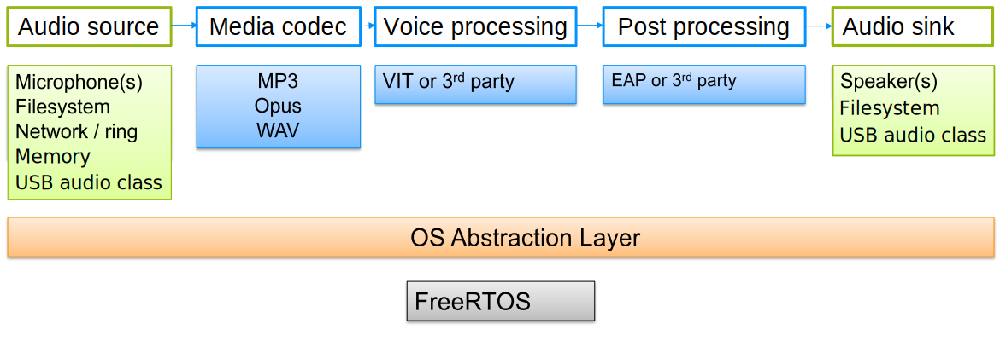

|
Maestro Audio Framework
v 1.0
NXP Semiconductors
|
|
Maestro Audio Framework
v 1.0
NXP Semiconductors
|
This document describes basic usage of Maestro Audio Framework. The intent of this framework is to enable chaining of basic audio processing blocks (called "elements"). These blocks then form stream processing object ("pipeline"). This pipeline can be used for multiple audio processing use cases. The processing blocks can include (but are not limited to) different audio sources (for example file or microphone), decoders or encoders, filters or effects and audio sinks.
Framework overview is depicted on the following picture:

In order to setup the audio framework properly, it is necessary to create a streamer with streamer_create api. It is also essential to setup the desired hardware peripherals using the functions described in streamer_pcm.h. One can refer to the maestro_demo example application which can be found in audio_examples folder of the desired board. The demo application is based on FreeRTOS and uses multiple tasks to form application functionality. The Maestro example project consists of several files with reference to audio framework. The initial file is main.c with code to create multiple tasks. For features including SD card (read file from SD card supported for now), the APP_SDCARD_Task is created. The command prompt and connected functionalities are handled by APP_Shell_Task. User commands are handled by functions in cmd.c. Three main commands are:
One of the most important parts of the configuration is the streamer_pcm.c where can be found the initialization of the hardware peripherals, input and output buffer management. For further information please see also streamer_pcm.h
With creation of streamer object, the message thread is also created. The message thread is placed in app_streamer.c file, reads message queue and reacts on following messages:
The STREAM_MSG_UPDATE_POSITION prints info about current stream position, STREAM_MSG_EOS stops streamer, STREAM_MSG_CLOSE_TASK closes streamer thread and STREAM_MSG_ERROR stops streamer and closes thread.
File command creates a streamer pipeline described in function STREAMER_file_Create in file app_streamer.c. The crucial part in this is defining pipeline type as STREAM_PIPELINE_FILESYSTEM. This sets up the processing chain from file source to audio sink with decoder and potentially other processing in between. Playback itself is started in STREAMER_Start function. The elements that pipeline consists of are:
Other possible element types could be found in streamer_api.h.
Each of the elements have several properties that can be accessed using streamer_get_property. These properties allow user to change the values of the appropriate elements. The list of properties can be found in streamer_element_properties.h. For the example of setting property value one can see piece of code from app_streamer.c:
Some of the predefined values can be found in streamer_api.h.
Record_mic option creates pipeline described in function STREAMER_mic_Create in file app_streamer.c. The pipeline is selected with STREAM_PIPELINE_PCM in pipeline_type parameter. This configuration takes samples from microphone input and send it to audio sink with optional processing in between. The elements that pipeline consists of are:
Other possible element types and some of the predefined values could be found in streamer_api.h.
User can change the pipeline type when creating the streamer object. Currently tested options are: STREAM_PIPELINE_FILESYSTEM and STREAM_PIPELINE_PCM. There are more pipelines defined, but supporting them is planned for future.
Current version of the audio framework supports some optional features. These can be limited for some MCU cores or boards variants.
The demo can play multiple files with file option (STREAM_PIPELINE_FILESYSTEM). The opus (as standalone or as part of ogg encapsulation) and mp3 codecs are supported for now. For detailed code handling this file extension please check cmd.c file and shellFile() function. Supported codecs and its option are:
| Decoder | Sample rates [kHz] | Number of channels | Bit depth |
|---|---|---|---|
| MP3 | 8, 16, 24, 32, 48, 11.025, 22.050, 44.1 | 1, 2 (mono/stereo) | 16 |
| opus | 8, 16, 24, 48 | 1, 2 (mono/stereo) | 16 |
For record_mic option (STREAM_PIPELINE_PCM pipeline type) the VIT can be enabled. In app_streamer.c file and STREAMER_mic_Create function the VIT_PROC definition enables postprocessing streamer property with VIT. More details about VIT are available in VIT package (depending on platform the path is middleware\vit\{Cortex_M7, HIFI4}\Doc\).
For file option (STREAMER_PIPELINE_FILESYSTEM pipeline type) the EAP can be enabled. In app_streamer.c file and STREAMER_file_Create function the EAP_PROC definition enables postprocessing streamer property with EAP. More details about EAP are available in EAP package (middleware\EAP\Doc\).